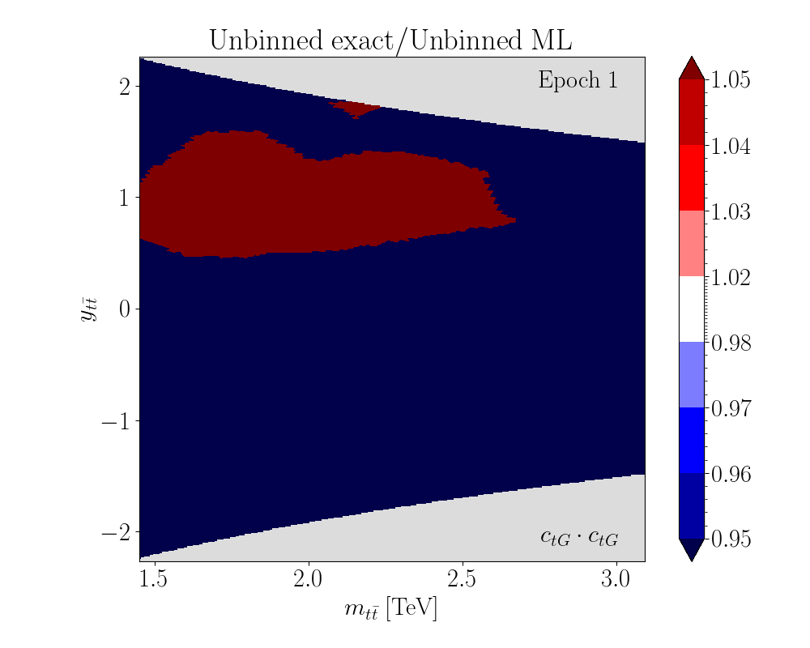
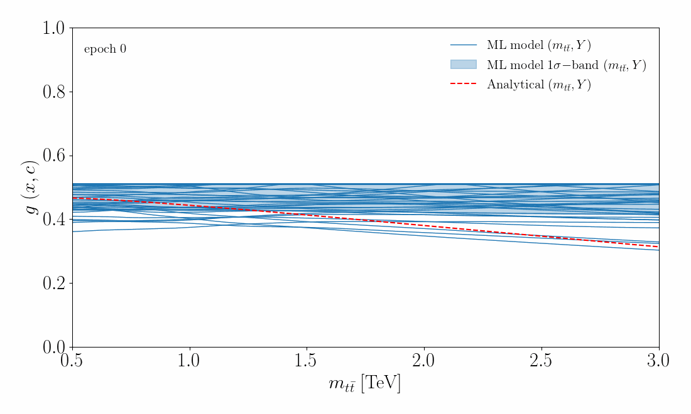

Software
I am the (co)author of the following software packages:
-
Machine Learning for EFT
ML4EFT is a general open-source framework for the integration of unbinned multivariate observables into global fits of particle physics data. It makes use of machine learning regression and classification techniques to parameterise high-dimensional likelihood ratios, and can be seamlessly integrated into global analyses of, for example, the Standard Model Effective Field Theory and Parton Distribution Functions.
You can find our paper here.


-
EELSfitter
EELSFitter is an open-source Python-based framework developed for the analysis and interpretation of Electron Energy Loss Spectroscopy (EELS) measurements in Transmission Electron Microscopy (TEM). EELSfitter is based on the machine learning techniques developed by the NNPDF Collaboration in the context of applications in high energy physics, in particular feed-forward neural networks for unbiased regression in multidimensional problems.
You can find our paper here.
-
SMEFiT
SMEFiT is a Python package for global analyses of particle physics data in the framework of the Standard Model Effective Field Theory (SMEFT). The SMEFT represents a powerful model-independent framework to constrain, identify, and parametrize potential deviations with respect to the predictions of the Standard Model (SM). A particularly attractive feature of the SMEFT is its capability to systematically correlate deviations from the SM between different processes. The full exploitation of the SMEFT potential for indirect New Physics searches from precision measurements requires combining the information provided by the broadest possible dataset, namely carrying out extensive global analysis which is the main purpose of SMEFiT.